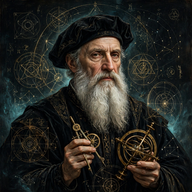

Flagship model
Seven tracks. One discipline.
Computing Fundamentals, AWS, Azure, GCP, Oracle, DevOps, and AI — the Interstitium Labs flagship sequence. Every track is a full course in the unified 6-tab shell, tutored by Noah, built on original material. A plant, not a video LMS.
Fundamentals on-ramp
Start at the foundations
New to the craft? The on-ramp is the honest order of operations — foundations first, then one cloud, then the discipline that ties clouds together, then AI. Every step is a real sitting with labs, drills, and Noah at your shoulder.
Certification maps
Where each track can take you
Maps sequence real vendor certifications from first to last, name the bootcamp modules that prepare each exam domain, and hand you a Noah readiness protocol. Interstitium Labs confers no certificate and is not affiliated with any vendor named — these maps route you to the real exams.
Certification names verified against competitive research (October 2026). Exam codes change — always confirm the current code on the vendor's site before booking. No exam content is reproduced; practice material is original.
Community
Study the tracks with a cohort
Sittings are better shared. Work each track alongside a cohort moving at your pace, bring your hypotheses to Noah, and ship the labs that prove the work.
Track cohorts
Enroll in a track and study it with a cohort on the same sequence — same modules, same missions, same exam dates on the cert maps. Self-paced, with Noah re-sequencing drills toward your weakest domains.
Noah study hall
Noah is Socratic, local, and lab-aware. Bring a hypothesis, not "just give me the answer" — in every lab, drill, and mission across all seven tracks.
Ship the proof
Every track ends in missions and capstones you can show: provisioned infrastructure, a deployed pipeline, a RAG assistant. The work is the record.
Noah Live Assist
Ask Noah about any track
Socratic in-lab help — never an answer dump first. An educational Interstitium agent, local-first. Try it now:
